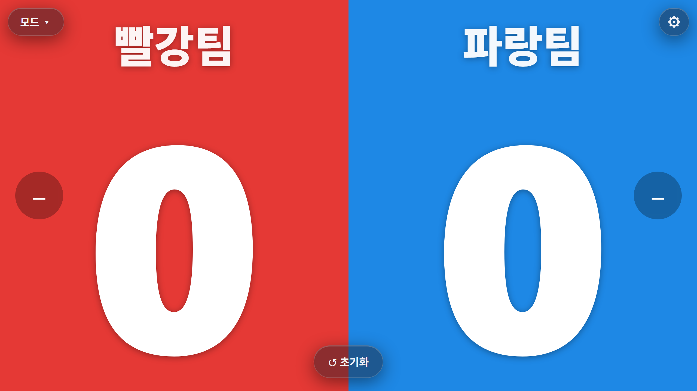
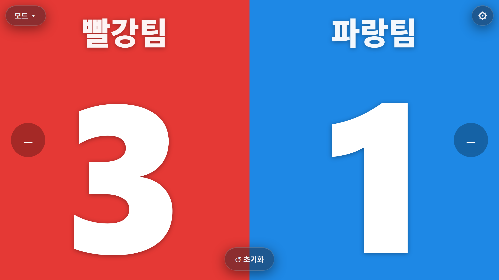
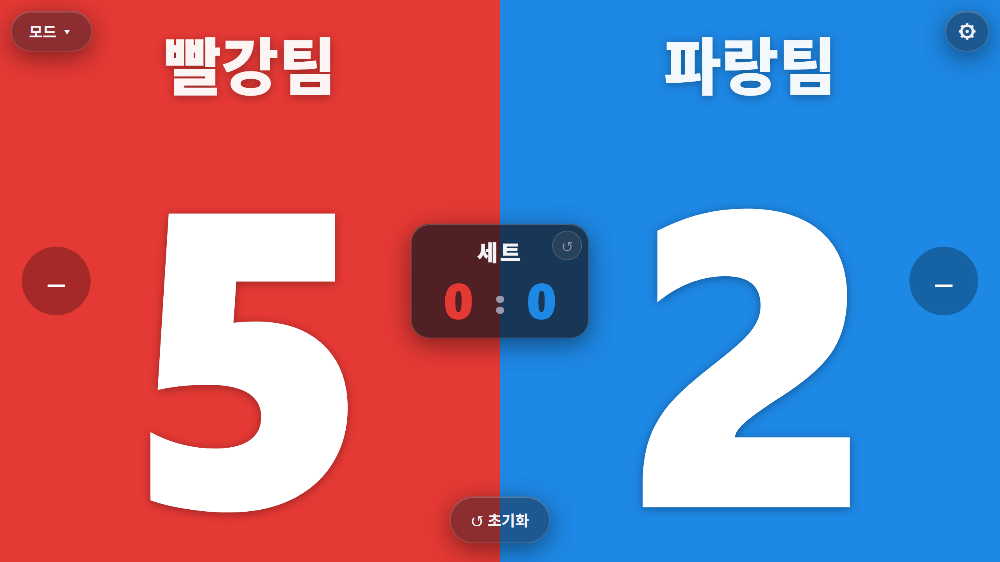
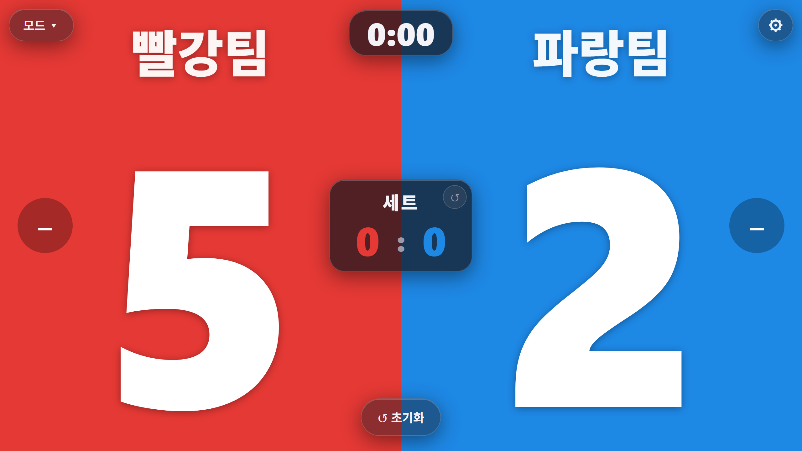
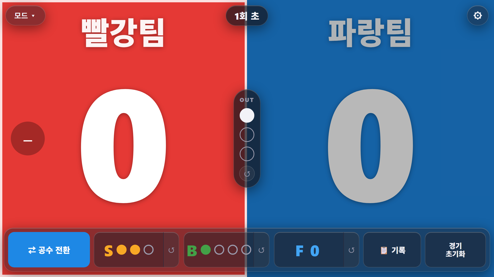
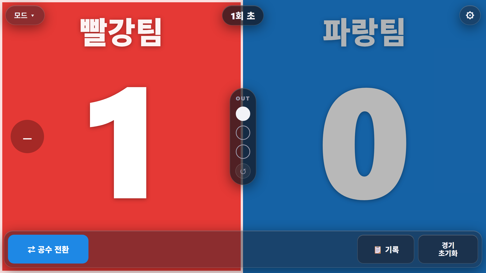
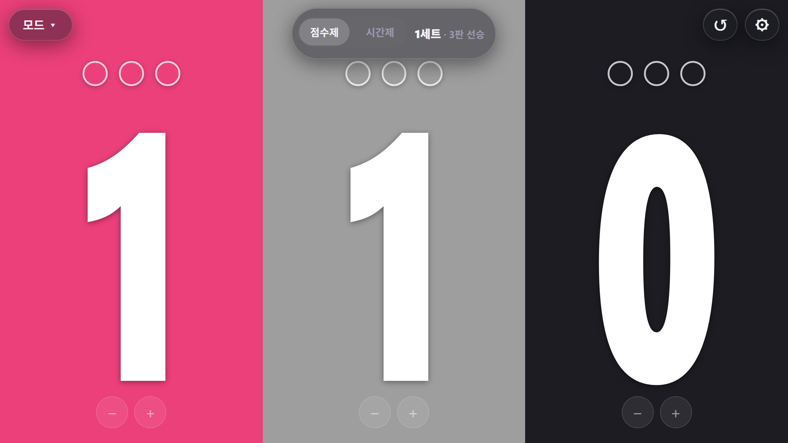
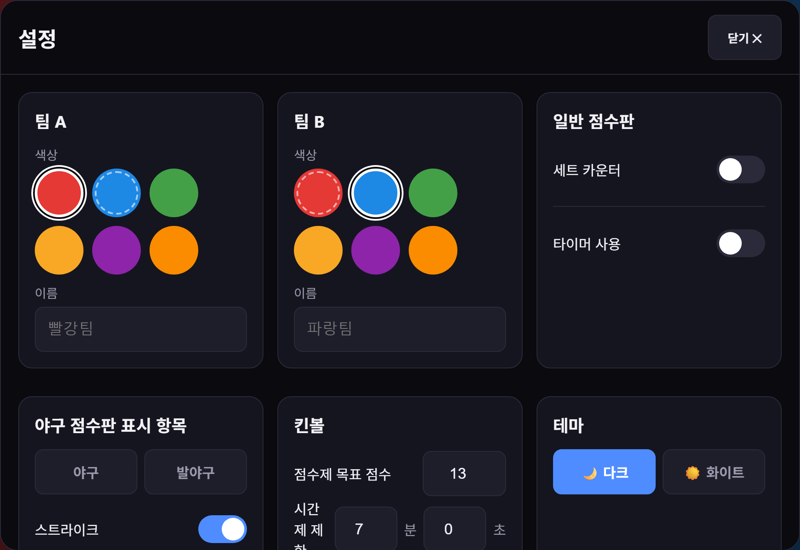

점수판 웹

실물 점수판, 왜 그렇게 잘 넘어질까요 😅
체육 시간에 점수 세는 거, 은근히 일입니다. 머릿속으로 세다 한눈팔면 "쌤 우리 몇 점이에요?" 소리가 사방에서 날아오죠. 그러다 정작 아이들 움직임은 못 봐요.
그렇다고 실물 점수판을 쓰자니, 이건 이거대로 번거롭더라고요. 세워두면 공에 맞아 넘어지고, 숫자판은 잘 고장나고. 무엇보다 종목마다 필요한 게 다른데 실물은 그걸 못 따라와요. 야구엔 스트라이크·볼이 있어야 하고, 킨볼은 팀이 셋인데 말이죠. 게다가 지금 어느 게 우리 팀인지 알려주기도 애매하고요.
그래서 만들었습니다. 태블릿 한 대를 그대로 체육관 전광판으로 쓰는 점수판이에요. 넘어질 일도, 고장날 일도 없고, 종목별 기능까지 챙깁니다. 세워두기만 하면 됩니다.
조작은 탭 한 번
팀 영역을 탭하면 +1, 아래 − 버튼으로 감소, ↺ 초기화로 리셋. 그게 전부예요. 아이들도 몇 초면 스스로 누릅니다. 교사가 점수판을 붙잡고 있을 이유가 없어지죠.

종목별로, 필요한 게 화면에 그대로
여기까지면 흔한 점수판인데, 진짜는 종목을 바꿔도 그 종목에 맞게 화면이 바뀐다는 거예요. 앱을 갈아끼울 필요가 없습니다.
세트제 경기엔 세트 카운터
피구·배구처럼 세트로 가는 종목이면 가운데 세트 스코어가 따로 떠요. 이번 세트 점수와 세트 승수를 헷갈릴 일이 없죠.

시간 재야 할 땐 타이머까지
제한 시간이 있는 경기라면 상단에 타이머를 얹으세요. 카운트업·카운트다운·현재시간 중에 고를 수 있어요. 스톱워치 따로 들고 있을 필요가 없습니다.

야구할 땐 스트라이크·볼까지 그대로
티볼·야구를 할 때 제일 아쉬웠던 게 이거였어요. 실물 점수판엔 스트라이크·볼·아웃이 없잖아요. 여기선 회차 표시에 S·B·O 카운트, 공수 전환까지 다 됩니다. 먼저 공격할 팀만 골라주면 시작이에요.

발야구도 종목에 맞춰
발야구라면 표시 항목을 발야구에 맞게 켜고 끕니다. 야구 골격(회차·공수 전환·기록)은 그대로 쓰면서, 우리 반 규칙에 맞는 것만 남기면 돼요.

킨볼은 세 팀, 목표점수는 자동
킨볼은 팀이 셋이라 일반 점수판으론 답이 없었는데, 여기선 화면이 세 칸으로 갈라져요. 팀마다 목표 점수만큼 동그라미가 있어서 점수가 오르면 채워집니다. 목표에 얼마나 남았는지 아이들이 스스로 보죠.

설정, 이런 것까지 됩니다
모든 건 설정(⚙) 하나에서 손봅니다. 우리 반에 맞게 처음 한 번만 잡아두면 돼요.

어느 게 우리 팀인지부터요. 팀 색을 빨강·파랑·초록·노랑·보라·주황 중에 고르고, 팀 이름도 직접 넣습니다. "빨강팀 이겨라"가 아니라 우리 반이 정한 팀 이름 그대로 화면에 떠요.
야구·발야구는 스트라이크·볼·아웃·파울 표시를 각각 켜고 끄고, 킨볼은 목표 점수(기본 13)와 시간 제한(분·초)까지 잡아둡니다. 눈부신 체육관이면 화이트 테마로 바꾸면 되고요. 오늘 티볼, 다음 주 킨볼, 그 다음 피구 세트제여도 이 화면 하나 안에서 다 돌아갑니다.
점수 세느라 손 바쁠 일 없이
설치도, 로그인도 없습니다. 링크만 열면 끝이에요. 점수 세고 지우고 다시 쓰던 그 손, 하나 덜 가시라고 만들었습니다. 손 덜 가는 교실, 여기서도요. 🐈
써보러 가기 →링크만 열면 바로 시작 — 설치도 계정도 필요 없어요.
만드는 재미로 사는 초등쌤, 박덕구 🐈